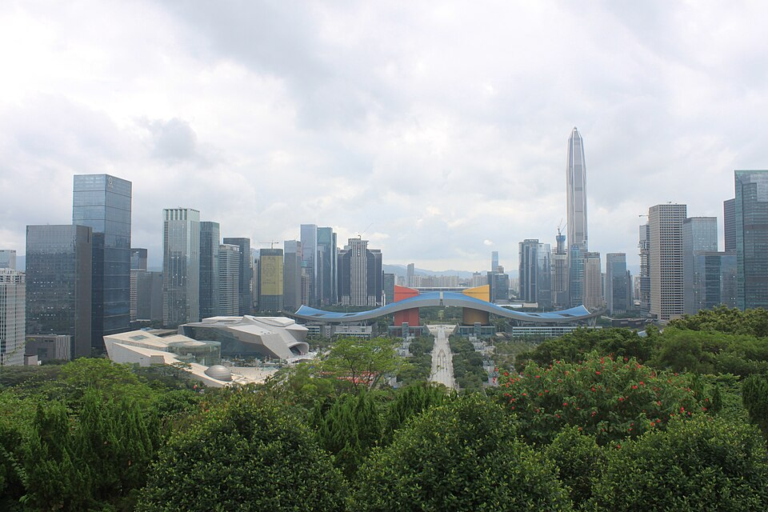
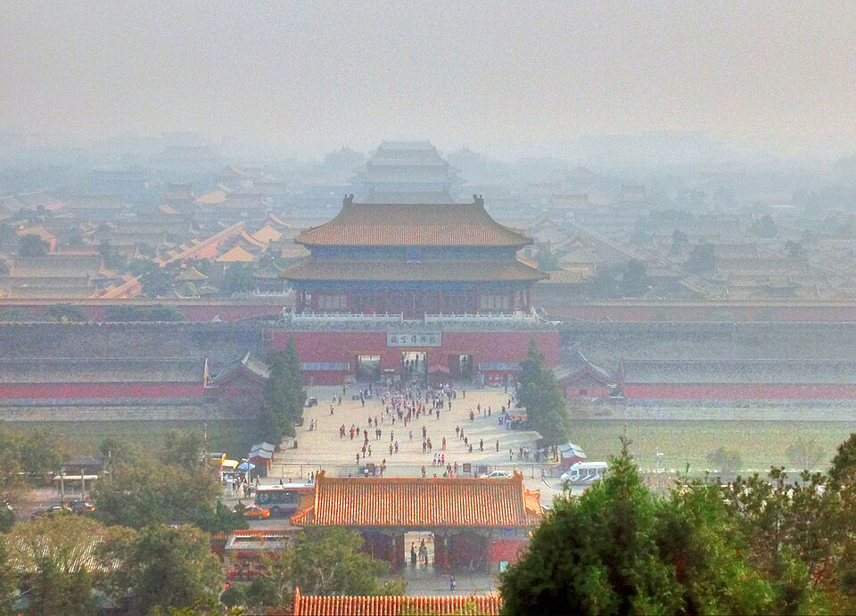
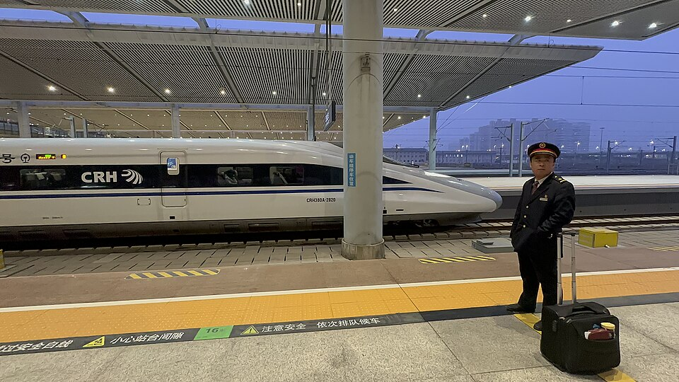
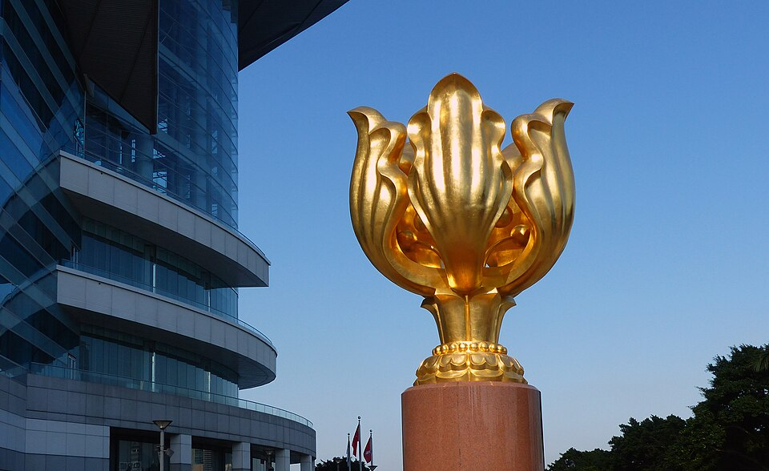

Unit 18 · Study guide · China
China Since Mao 改革开放
Reform, opening, and one-party rule, 1976 to the present
ContentsOverview
The unit in one paragraph
p. 524
After Mao died in 1976, the Communist Party turned away from class struggle and made economic growth its top priority. Under Deng Xiaoping, collective farming gave way to the responsibility system, Special Economic Zones invited foreign capital, and state factories shed tens of millions of workers. For most of 1980–2010 China had the world's fastest-growing economy, about 10 percent a year, and saw the greatest migration in history as some hundred million people left poor rural areas for booming cities. The gains were uneven: cities gained more than villages, the coast more than the interior, and people entering the job market more than their parents. The party dismantled much of Mao's system but kept its monopoly on power, crushing the 1989 protests. Across the strait, Taiwan grew rich and became a democracy. p. 524
- Can the party keep tight control over political expression as communications with the world open up?
- Can it dampen unrest over unemployment, unpaid pensions, and corruption? Will the gap between rich and poor keep widening?
- Can damage to the environment be checked? Is China becoming a country of rule of law, and will it accept international standards?
- Is a return to Maoist policies still possible?
Mao dies; 39 million party members, only 4% with college educations; collective farms; no private cars; about 250 million people below the poverty line two years later. pp. 525, 527, 532
The world's second-largest economy; about 80 million party members; some 230 million migrants; half the population urban; almost 14 million cars built that year. pp. 526, 530, 532, 539
Timeline at a glance
Political transformation
pp. 525–526
In the first decade after Mao's death, much of what had been built in the 1950s was abolished or slowly transformed. The Communist Party, however, kept its large membership and its political power. p. 525
From Hua Guofeng to Deng Xiaoping p. 525
- 11976. Hua Guofeng, a relatively obscure veteran Mao had singled out months before his death, takes over the party. Siding with the pragmatists, he has Mao's wife Jiang Qing and three associates arrested. This Gang of Four is blamed for all the excesses of the Cultural Revolution.
- 21977. Deng Xiaoping is restored to his old posts.
- 3December 1978. Deng replaces Hua as top official.
Like Mao, Deng had an impressive revolutionary record: in France with Zhou Enlai in the early 1920s, then the Shanghai underground, the Long March, and guerrilla war against Japan. In 1956, at 52, he joined the Politburo Standing Committee and became party secretary general. Twice ousted in the Cultural Revolution, he called absurd its slogan that it was better to be poor under socialism than rich under capitalism, insisting that "poverty is not socialism." p. 525
A pragmatist, Deng took as his catchphrase the Four Modernizations: agriculture, industry, science and technology, and defense. He openly admitted China was poor and backward and saw no reason not to adopt foreign technology if it improved the lives of the masses. Thousands sent to the countryside were allowed home, eager to make up for the "wasted years."
Rebuilding the party p. 525
Many members who had gone to school in the 1970s had been admitted for political fervor, under a watered-down, anti-intellectual curriculum. Deng weeded out leftists recruited during the Cultural Revolution, rehabilitated the persecuted, imposed retirement ages, and recruited younger, better-educated members. Blaming the Gang of Four for damaging a whole generation, he pushed university reform. Intellectuals answered the more open atmosphere with new magazines and franker literature, and in 1978 the Democracy Wall in Beijing drew all kinds of self-expression until it was shut the next spring. p. 525
Opening, corruption, and pushback p. 525
Opening
The first Special Economic Zone opened at Shenzhen in 1980. By the early 1980s China was crowded with foreign visitors; thousands of Western teachers taught foreign languages; churches and Buddhist and Daoist temples reopened; people wore more varied colors.
Corruption
Cadres who supervised the sale of state and collective assets were tempted. About 40,000 members were expelled for corruption in 1983–86 and 109,000 in 1987 alone. Corruption remains the party's most serious problem.
Pushback
Older members disliked the pace of change and youth's interest in the West. In 1983 the party campaigned against spiritual pollution; after campus unrest in 1986 it revived the early-1960s call to learn from Lei Feng.
After 1989
Following the bloody suppression of the Tiananmen movement, all 48 million members had to submit self-evaluations to weed out sympathizers; about 1 million were sent to the countryside to learn from the masses.
The 1992 southern tour pp. 525–526
The collapse of communism in Eastern Europe and the Soviet Union made Deng more determined to press on with economic reform: in his view, the Soviet Union broke up because central planning had not produced prosperity. In 1992 he went south to visit the Special Economic Zones and told people not to worry whether policies were capitalist or socialist, only whether they would make China more prosperous. The party constitution was soon rewritten to call China a socialist market economy and to define socialism's essence as liberating and developing productive forces. Joint ventures multiplied in the 1990s, especially with businessmen from Hong Kong, Taiwan, and South Korea, and local elections let people choose some leaders.
On May 31, 2012, after railway minister Liu Zhijun was fired, someone posted a Global Times article arguing that wiping out corruption was not yet possible. Officials' legal salaries are very low, so their pay comes through "unwritten rules" with unclear limits; Chinese opinion would reject the high salaries used in Singapore and Hong Kong or the revolving doors of the United States; and ending corruption requires China's overall development. The paper still called fighting corruption the top problem for political reform. Of thousands of replies on NetEase, one listed eight types of corrupt official; others asked whether the poor could "moderately" rob a bank, insisted that any corruption is excessive, shrugged that nothing would change, or defended the paper's satirical spin-off.
The economic miracle
pp. 527–528
Deng's policies set off a boom reminiscent of Japan in 1947–1971 (Unit 17): the economy grew rapidly every year, often by more than 10 percent. Life expectancy rose steadily, to 73 for men and 77 for women in 2010, as did average height, both signs of better nutrition. p. 527
Encouraging capitalist tendencies pp. 527–528
Responsibility system
The most important rural reform (early 1980s) dismantled collective agriculture. Households bid for land and other assets they could treat as their own (legally on leases of up to fifty years), delivered specified crops, and kept or sold the rest.
Rural industry
Sidelines (vegetables, pigs, chickens) and small businesses of every kind were encouraged, from fish farms to export factories. By 2004, 22 million township and village enterprises employed 139 million workers. Coastal farmers' incomes rose fastest.
Special Economic Zones
Deng dropped Mao's insistence on self-sufficiency and courted foreign investors. The best-known zones, Shenzhen on the Hong Kong border and Pudong across the Huangpu River from Shanghai, offered low taxes, new plants, and a well-trained but cheap labor force.
Joint ventures
China had to bring its legal system closer to international standards, but the payoff was large: capital and up-to-date technology. Foreign firms built factories for the Chinese market (vehicles) and contracted Chinese plants to make clothing, toys, watches, and computers for the West.
In the three decades after the fishing village of Shenzhen became a Special Economic Zone, its population grew to about 9 million and its skyline filled with high-rises and factories. p. 528 Guangdong, with the best access to the financial giant Hong Kong, did especially well.
| 1982–92 | 97% of Hong Kong's 3,200 toy factories move to Guangdong |
| 1996 | World's largest garment maker: 16.7% of world garment exports |
| 1997 | 1.55 billion shirts made |
| 1998 | 6.3 billion pairs of leather shoes, about 1 billion pairs of sports shoes |
| 2004 | World's top exporter of computers and components |
| 2006 | World's leading supplier of seafood |

Freed farmers produced more and sold the surplus; rural factories absorbed labor; foreign investors brought capital, technology, and export markets in exchange for cheap labor and incentives. Pudong, opposite old Shanghai, became the second showcase zone after Shenzhen.
Shrinking the state sector
p. 529
In the 1980s and 1990s, people who worked for the state learned that reform could cost them their jobs. Between 1990 and 2000, state-owned enterprises pressed to turn a profit shed some 30 to 35 million workers, yet few could compete with private or collective firms. p. 529
Coal
Ministry of Coal mines could not produce as cheaply as 80,000 small local and private mines. By 1992 the ministry owed 6 billion yuan and needed to lay off 1 million miners. The small mines probably created more jobs, but without benefits or pensions.
The northeast
In Liaoning, about half of 10 million state workers lost their jobs in the 1990s; no buyer would take on Shenyang's bankrupt factories and their retirees. In Heilongjiang's cities, up to 60% of people were unemployed or unpaid; bankrupt firms paid neither wages nor pensions but were not dissolved, so the state would not inherit their obligations.
The military
The PLA peaked at 4.75 million troops in 1981; many moved to the People's Armed Police, a domestic force. It sold off many factories, even military ones; some tank plants now make buses or trucks.
Regional disparities and internal migration
pp. 529–531
Deng said early on that it was acceptable for "some to get rich first" ("some get rich first"). Because most industry grew in the coastal provinces, regional inequality increased. The textbook's Map 30.1 shows population packed along the eastern coast and river valleys, with the west thinly settled. Areas far from good roads stayed extremely poor: in upland Shanxi, a third of about 9 million people were below the poverty line; in the late 1990s half the boys and most of the girls there did not attend school, and about 80% of adult women were illiterate. pp. 529–530
The greatest migration in world history p. 530
When internal controls on migration collapsed in the early 1980s, migrant workers flooded the coast, living in shantytowns or a dozen to a room to share in the new wealth. Urban crime grew and was often blamed on migrants. In Guangdong, migrants who could not speak Cantonese became an exploited class: the worst jobs, 10- or 12-hour days, seven days a week, and dismissal if they protested. In the 1990s, as laid-off state workers took jobs migrants had held, cities deported more migrants home.
Some wealth trickled down: the Pearl River Delta imports pigs and rice from Hunan and Sichuan, and migrants send home what they can. But the poorer areas were often squeezed hardest by cadres. All through the 2000s peasants protested when local officials seized their land for development, rarely with success. p. 530
Cheng Junyu, migrant worker (b. 1986)
- Childhood. Born a decade after Mao died to pig-raising farmers in a Sichuan hamlet. Her father took a coal-mine job for better pay; her mother left when she was nine, and she skipped school to tend the fields.
- Age 13. Her father, ill with black lung, quit the mine; she became the family's main provider. An aunt took her to Chongqing for jobs as maid, waitress, mining-camp cook, and cashier, taking a cut of her wages.
- Guangdong. Hired as cook for a foreign factory owner, she talked her way onto the factory floor (small generators) and broke with her aunt. The owner saw her intelligence: she handled shippers, suppliers, inventory, and costs on a computer, and he paid for her brother's three-year technical school.
- 2006. On US$206 a month she sent home $50–100 monthly: enough for the best house in the village and a color TV that stayed boxed because broadcasts had not reached the area. Home was 600 miles away: 36 hours by train and 11 by bus.
- Family. Her uncle's wife left her young sons to join Junyu at the factory. Keeping the family afloat required breaking it up. Junyu hoped to return to school once her brother could support the family.
Environmental degradation
p. 530
Under Mao, people were urged to harness nature to raise production, with little thought for the results of terracing mountains, plowing grasslands, reclaiming wetlands, damming rivers, or killing all the sparrows. Soil erosion, desertification, and massive floods followed. Rapid industrial growth after 1978 added air and water pollution. p. 530
Air
A 1998 World Health Organization study found 7 of the world's 10 most polluted cities in China. Coal supplies 75% of energy and cars are replacing bicycles; air pollution raises deaths from respiratory disease.
Water quality
Much water is unfit to drink: untreated sewage, industrial effluent, and farm runoff. Paper mills, chemical plants, and tanneries ruin rivers even for irrigation.
Water supply
The Yellow River runs dry longer each year and water tables are falling. A controversial water diversion project moves Yangzi water to the North China Plain. In the Yangzi region, logging, erosion, and dams worsen floods.
Farmland
Development paves over more and more arable land, raising the question of how China will feed its growing population.

Environmental activism is growing: more than two thousand registered environmental NGOs protest dams, sue polluters, promote conservation, and publicize threats to biodiversity. In June 2007 about ten thousand residents of Xiamen, alerted by cell phone, marched against a huge chemical plant planned for their city. Beijing recognizes the problem and passes tougher laws, but enforcement lags where local officials want jobs and development.
Consumer culture
pp. 530–532
In the early 1980s people had more money but little to buy: city department stores stocked thermos bottles and inflatable toys, not the TVs and tape recorders customers wanted. By the 1990s urban incomes had risen and factories turned out consumer goods; Chinese bought TVs, stereos, clothes, furniture, air conditioners, and washing machines, and city shopping streets were full of imported and domestic goods. pp. 530, 532
| City | 1986 | 1995 |
|---|---|---|
| Beijing | 62 | 98 |
| Shanghai | 47 | 98 |
| Xi'an | 14 | 83 |
In the 1990s many grew rich enough to buy imported cars, build lavish houses, and give generous gifts to every official they dealt with; in 2010 almost 14 million passenger cars were made. Consumer culture reached the countryside too, limited by lower incomes: farmers built houses and bought better food, TVs, furniture, and clothes, and villages without electricity built generators. With migrants and television spreading images of city life, rural families kept adding to the goods they considered essential. Chinese, like people elsewhere, came to identify more with what they consumed than with politics. p. 532
Education and the arts
pp. 532–534
Education pp. 532–533
- 1Cultural Revolution. Being Red mattered more than being expert, and education at every level deteriorated.
- 21977. College entrance examinations return, a symbolic reversal. Graduates may apply to study abroad, setting off a craze for foreign languages; by 2009 more than 600,000 Chinese held U.S. student visas.
- 3Early 1980s. Communes are dismantled, ending the work points that paid peasant teachers. Rural schools charge fees often too high for peasants; some make pupils peddle apples or assemble firecrackers in class.
- 4Late 1990s. Universities charge about 10,000 yuan a year; complaints that fees exclude rural children lead to scholarships.
- 52005. After a scathing China Youth Daily report on rural children in Hunan, the government promises to abolish rural school fees by 2007.
The arts pp. 532–533
During the Cultural Revolution intellectuals learned to keep quiet, and audiences got dull, politicized stories, plays, and films. After the Gang of Four fell, "wounded" literature by those who had suffered appeared at the end of the 1970s, followed by investigative reporting on corrupt cadres, philosophers re-examining Marxism, and writers and filmmakers exploring once-taboo sexuality. Mao-era films came from state studios under the Ministry of Culture; after a new generation graduated from the Beijing Film Academy from 1982, artistic films reached international festivals by the 1990s.
Figure 9. Flip cards on films and TV of the reform era, p. 533.
China built subways in many cities, expressways across the country, and some 400 airports served by nine airlines. After 2000 the most dramatic change was high-speed rail (200 km/h or more). Between 2005 and 2010 China went from none to more than all of Europe, and by 2012 it was expected to have more track than the rest of the world combined. It opened design bids to foreign firms but required the cars to be built in China and the technology shared. Critics charge that safety was sacrificed for speed (a July 2011 crash killed 40) and complain of high fares, but the lines tie China together as never before.

Gender roles, population control, and family life
pp. 533–536
Gender roles pp. 533–535
From the 1920s the party espoused equality for women, admitted them on equal terms, and pushed marriage reforms such as the right to initiate divorce; reality never matched the rhetoric, but women played larger roles than before. After 1949 women were mobilized for farm work, girls were enrolled in school, and propaganda showed tough women doing men's jobs. Women's share of elementary teachers rose from 18% (1951) to 36% (1975) and 49% (1998). In the reform era women still had complaints:
School
With elementary fees, poorer families kept daughters in school for less time than sons.
Work
Young men took well-paid construction jobs far from home; young women took lower-paid textile, electronics, and toy jobs. At home, women farmed while men got skilled work.
Jobs in cities
Once the state stopped assigning jobs, women graduates got worse jobs than male classmates; women say they are the first laid off.
Population control and the one-child family p. 535
Public health measures of the 1950s cut the death rate, so that even the terrible famine of 1959–1962 made only a temporary dent in population growth. Mao rejected the idea that China could have too many people, but by his death the population neared 1 billion.
- 1Late 1970s. The state promotes the one-child family in cities and one or two children in the countryside. Birth targets are set for each place and divided into quotas; couples need work-unit (danwei) permission to marry and then to have a child.
- 2Early 1980s. Women pregnant outside the plan face often relentless pressure from birth-control workers and cadres to abort.
- 31990s. The campaign relaxes a little: families with only daughters may more easily try again for a son. From the mid-1990s foreigners may adopt unwanted children, mainly girls; by 2000, China is the top source of orphans adopted into the United States.
- 42011. Officials talk of ending the policy soon so the working-age population does not shrink (see fact-check notes).
Son preference means a coming shortage of young women, as female fetuses identified by ultrasound are more often aborted and baby girls more often given up. Unintended consequences include pampered urban only children taken to Western fast-food restaurants, a generation with no siblings whose children will have no aunts or uncles, and young couples who may have to support four elderly parents. p. 535
Family life pp. 535–536
After 1949, ancestor worship, lineages, and solidarity with patrilineal kin were discouraged as feudal; collectives took over property and labor, family heads lost authority, coerced marriages declined, and city people largely chose their own spouses. Reform did not turn back the clock. Rural stem families (a couple living with or near the husband's parents) remain common, but the elders have much less power. Young people decide to marry on their own and seek companionate marriage; they use the bride price for their own home and build for privacy; many are content with one or two children, even daughters, caring more for their nuclear family than for family continuity. Divorce is still rare in the countryside, but the ability to threaten it gives women more voice.
Critical voices
pp. 536–537
- 1Fall 1978. The first big-character posters go up on the Democracy Wall, mostly by high-school-educated workers, with Deng's blessing. A 28-year-old electrician, Wei Jingsheng, calls for a "fifth modernization": true democracy, in which the people choose representatives and can replace them at any time. He contrasts Western voters, who could remove a Nixon, de Gaulle, or Tanaka, with Chinese who risk prison for any comment on Mao.
- 2April 1979. Wei has been arrested and the wall shut. He spends most of the next eighteen years in prison, long stretches in solitary, until exiled to the United States in 1997.
- 31986. Physicist Fang Lizhi tells students that socialism from Marx and Lenin to Stalin and Mao has failed and urges the Western political system. Students at 150 campuses demand more freedom, less corruption, and better dorms. After the protests are suppressed, Deng has party secretary general Hu Yaobang dismissed as too conciliatory.
- 4Spring 1989. The Tiananmen movement (Table 3).
- 51990s. Crackdown and compulsory political study keep debate subdued. No single issue unites critics: activists organize workers facing unsafe conditions or unpaid wages, and farmers protest arbitrary taxes.
- 61999. The state outlaws Falun Gong.
1989: Tiananmen p. 537
| When | What happened |
|---|---|
| April | Protests begin modestly with a parade honoring the recently deceased Hu Yaobang, seen as the strongest voice for political reform. |
| April–May | Buoyed by Beijing residents' support, students escalate: officials should disclose income and assets; end mass political campaigns; allow street protests and let journalists report them; end corruption. Many invoke the May Fourth goals of science and democracy as still unfulfilled. When Deng calls it "counterrevolutionary turmoil," they do not back down; as momentum flags, a couple of thousand begin a hunger strike. |
| May 17 | With the world press in Beijing for Soviet leader Gorbachev's visit, the square fills with students from every university and people from other organizations, even the Foreign Ministry, Central Television, and the Public Security Bureau Academy; workers carry their factories' banners. |
| After Gorbachev leaves | Humiliated, Deng and the leadership declare martial law and dismiss the more conciliatory secretary general Zhao Ziyang. |
| June 3–4 | Seasoned troops enter central Beijing through tunnels, followed by tanks and artillery. Unarmed citizens try to stop them; after bloody clashes the armored vehicles break through and clear the square. Several hundred die that night, many of them ordinary residents (see fact-check notes). |
The students had no experience of democracy, and their leaders often disagreed over tactics. p. 537
Falun Gong p. 537
The government had pointed with pride to the elderly practicing Qigong stretching and balancing exercises in parks each morning, believed to nurture qi (vital energy). In the 1990s Li Hongzhi developed Falun Gong, a form of Qigong drawing on Buddhist and Daoist ideas and promising good health. It attracted many party and PLA members and their wives and mothers. When in 1999 Li gathered fifteen thousand followers outside the leaders' compound in Beijing to seek recognition, the leadership outlawed the sect and sent thousands to reeducation. Its power to reach the masses and offer an alternative to the party seemed especially threatening.
Taiwan
pp. 538–539
In 1949, as Communist victory loomed, Chiang Kaishek moved much of the Nationalist government and army to Taiwan, less than a hundred miles off Fujian. Taiwan had been a Japanese colony from 1895 to 1945 and had only just returned to Chinese rule. The first encounter was hostile: in 1947 the government met protests against corrupt officials by shooting protesters and hunting down suspected leaders, killing many local leaders (see fact-check notes on the toll). With U.S. backing as the Cold War intensified, the Nationalists stabilized and concentrated on development. Under Chiang's son Chiang Chingkuo (Jiang Jingguo), Taiwan moved in the late 1980s from one-party rule to parliamentary democracy. p. 538
Losing diplomatic standing p. 538
In the 1950s and 1960s the United States treated Chiang's Republic of China as China's legitimate government and kept it in China's UN seat. When U.S.–PRC relations were normalized in the 1970s, both agreed there was one China and that Taiwan was part of it; the U.S. insisted unification come peacefully and kept up military aid. Beijing required countries wanting embassies in Beijing to close theirs in Taiwan, and as China joined more international bodies, Taiwan was often forced out.
An economic power pp. 538–539
- 1Head start. Japanese-era land reform and industrial development; heavy foreign investment, especially from the U.S. and Japan; and real authority for economists and engineers, many trained abroad, who headed ministries.
- 21950s. Import substitution: light industry making consumer goods.
- 31960s. Export-oriented industry, especially electronics, following Japan into stereos and TVs as Japan moved into cars. First tax-free export processing zone (1966).
- 41980s. Enough wealth for capital-intensive industries such as steel and petrochemicals.
- 5Since 1987. Travel limits lifted; about $100 billion invested on the mainland, where chip and PC plants moved for lower wages, straining Taiwan's own economy.
Democracy: Taiwan held its first open elections for president and the National Assembly in 1996. In 2000 the Nationalists lost a general election for the first time, to the Democratic Progressive Party, long associated with independence; in 2008 they returned after promising better ties with the mainland. p. 539
| Country | GDP per capita (US$) | Life expectancy | Literacy | Fertility | Population (M) |
|---|---|---|---|---|---|
| United States | 47,200 | 78.4 | 99% | 2.1 | 313 |
| Taiwan | 35,700 | 78.3 | 96% | 1.2 | 23 |
| Japan | 34,000 | 82.3 | 99% | 1.2 | 126 |
| South Korea | 30,000 | 79.1 | 98% | 1.2 | 49 |
| China | 7,600 | 74.7 | 92% | 1.5 | 1,337 |
| India | 3,500 | 66.8 | 61% | 2.6 | 1,189 |
| Vietnam | 3,100 | 72.2 | 94% | 1.9 | 91 |
| North Korea | 1,800 | 68.9 | 99% | 2.0 | 24 |
China in the world
pp. 538–539
After the split with the Soviet Union in the early 1960s, China severely limited outside contact, aiding some African countries and Maoist rebels but discouraging ties with relatives abroad for fear of spies. Mao's death changed this: China sought entry into international organizations, invited overseas Chinese to visit and invest, and sent officials around the world. p. 538

What changed, 1976 to 2012?
p. 539
| 1976 | About 2012 | |
|---|---|---|
| Economy | Collective farms; state enterprises; no foreign investment | Collectivization largely reversed; sidelines and small business encouraged; foreign firms invited; many state firms closed |
| People | "Rightists" and "counterrevolutionaries" stigmatized; college by political fervor | Labels lifted; nationwide entrance exams; young villagers migrate to coastal cities |
| Living standards | Poor almost everywhere | Enormously improved in the coastal provinces; far wider knowledge of the outside world |
| Inequality | Limited | More extreme: some fabulously wealthy, others unable to find work or pay for school or medical care |
| The party | Dominated by one man; advancement by political fervor | Collective leadership; advancement by technical expertise; still dominant, with tremendous coercive force |
After Mao, China's socialist system was dismantled step by step. The pace picked up in the 1990s: the state closed many state-owned enterprises, so a state job no longer meant lifetime income; coastal regions pulled ahead by attracting export factories; young people left the countryside as migrant labor; and environmental damage grew with the factories. The state interferes less in everyday life than before, but the Communist Party still dominates the government and has a hand in much of what happens. p. 539
Unit 19 takes up the region as a whole: businesspeople from Korea, Taiwan, and Japan running factories in China, shared pop culture, China's Internet controls, aging populations, and unresolved disputes over history (pp. 540–545).
Test yourself
Flashcards
Who's who
| Person | Why they matter |
|---|---|
| Hua Guofeng | Mao's chosen successor (1976); arrested the Gang of Four; replaced by Deng in December 1978 |
| Jiang Qing | Mao's wife; arrested as a member of the Gang of Four and imprisoned |
| Deng Xiaoping | Top leader from 1978; Four Modernizations, SEZs, responsibility system; 1992 southern tour; backed the 1989 crackdown |
| Wei Jingsheng | Electrician whose 1978 "fifth modernization" poster demanded democracy; jailed 1979, exiled 1997 |
| Fang Lizhi | Physicist who told students in 1986 that socialism had failed |
| Hu Yaobang | Party secretary general dismissed after the 1986 protests; his death sparked the 1989 movement |
| Zhao Ziyang | Conciliatory secretary general dismissed during the 1989 protests |
| Li Hongzhi | Founder of Falun Gong; organized the 1999 gathering in Beijing |
| Liu Zhijun | Railway minister fired for suspected corruption (2012); subject of the Documents feature |
| Cheng Junyu | Sichuan migrant worker (b. 1986) in a Guangdong generator factory; subject of the Biography |
| Chiang Kaishek | Moved the Nationalist government to Taiwan in 1949; died 1975 |
| Chiang Chingkuo | Chiang Kaishek's son; as president oversaw Taiwan's move to democracy in the late 1980s |
Key dates
| 1947 · 1949 | Nationalist crackdown in Taiwan · Nationalists move to Taiwan |
| 1976 | Mao dies; Gang of Four arrested |
| 1977 · 1978 | Deng restored; entrance exams return · Deng top leader (Dec.); Democracy Wall |
| 1979 · 1980 | Wei arrested; wall shut · Shenzhen SEZ |
| 1981 | PLA peaks at 4.75 million |
| 1983 · 1984 | Spiritual pollution campaign · Hong Kong agreement |
| 1986 · 1987 | Fang Lizhi; protests at 150 campuses · Hu Yaobang dismissed; Taiwan lifts travel limits; 109,000 expelled for corruption |
| 1989 | Tiananmen: hunger strike; Gorbachev's visit (May 17); martial law; crackdown (June 3–4) |
| 1992 | Southern tour; "socialist market economy"; 100 million migrants |
| 1996 · 1997 | Taiwan's first open presidential election · Hong Kong returned; Wei exiled |
| 1998 · 1999 | WHO: 7 of 10 most polluted cities in China · Falun Gong outlawed |
| 2000 · 2001 | DPP wins Taiwan · WTO |
| 2005 · 2007 | China Youth Daily exposé; high-speed rail begins · Xiamen protest |
| 2008 | Beijing Olympics; Nationalists return in Taiwan |
| 2010 · 2011 | Second-largest economy; 230 million migrants · high-speed rail crash; largest manufacturer |
Discussion questions
Open each for points the reading gives you to work with. The first five are Chapter 30's opening questions; the rest are the textbook's questions on its Documents and Biography features.
Can the party maintain tight control over political expression when communications with the rest of the world are so much more open?
- Control: Democracy Wall shut (1979); 1989 crackdown, self-evaluations, and political study; Falun Gong banned (pp. 525, 536–537).
- Openness: 907 million cell phones and hundreds of millions online; 26 million microblog posts on the 2011 rail crash; bloggers mocking the Global Times (pp. 526–527, 532).
- Unit 19 adds Internet monitoring rules (p. 540).
Can it dampen the unrest that results from unemployment, unpaid pensions, and political corruption?
- Pressures: 30–35 million laid off; unpaid wages and pensions in the northeast; land seizures; corruption the party's "most serious problem" (pp. 525, 529–530).
- Responses: expulsions for corruption, prosecutions, trickle-down to poorer provinces (pp. 525, 530).
Will the disparities between rich and poor continue to widen?
- Coast vs. interior, city vs. countryside, young vs. old (p. 524); "some get rich first" (p. 529); Shanxi uplands vs. Guangdong (pp. 529–530); unaffordable school and medical care (pp. 533, 539).
Can the damage to the environment be checked?
- Against: coal for 75% of energy, cars, water shortages, local officials who put jobs first (p. 530).
- For: 2,000+ environmental NGOs, the Xiamen protest, tougher national laws (p. 530).
Will China accept international standards that come with joining international organizations? Is a return to Maoist policies still possible?
- Legal reform to court investors; World Bank, IMF, and ADB reporting requirements; WTO (pp. 528, 538–539).
- Against a return: socialist market economy, collective leadership, expertise over fervor (pp. 526, 539). But the party still holds great coercive power (p. 539).
Documents: What are the merits of the argument that ridding China of corruption would require a higher level of development?
- Low legal salaries and vague "unwritten rules"; other Asian democracies are more corrupt; public would reject high official pay (pp. 526–527).
- Counterpoints in the replies: corruption is wrong at any level; the poor are not allowed "moderate" crime (p. 527).
Documents: What can you learn from the bloggers' responses about the mood in China?
- Sarcasm, anger, and resignation ("nothing will change"), but also defense of the paper; the Internet as a place where criticism can be voiced (p. 527).
Biography: Did Cheng Junyu have much choice about becoming a migrant worker?
- Her mother left, her father fell ill, and at 13 she became the main provider; her aunt arranged and profited from her early jobs (p. 531).
Biography: From the examples in this article, what sort of impact do job opportunities have on families?
- Remittances built a house and paid for her brother's school; most young people left the village; her aunt left her sons to work. Keeping a family afloat meant breaking it up (p. 531).
Key terms
Click to expand
Terms are grouped by topic. Where a term depends on another, the entry says what it builds on, so read those first. Hover or tap any dotted term in the text for a quick definition, or open ✎ at the bottom right. † marks a term or fact from outside the textbook. Terms from earlier units are repeated briefly where you need them.
From earlier units (review)
- Cultural Revolution
- Mao's 1966–1976 campaign that purged officials, closed schools, and sent youth to the countryside; blamed afterward on the Gang of Four. pp. 525, 532; Unit 15
- Work unit (danwei)
- The workplace unit through which the state managed urban life; under the one-child policy it gave permission to marry and to have a child. p. 535; Unit 15
- People's Liberation Army (PLA)
- China's armed forces; peaked at 4.75 million troops in 1981 and shrank to about 2.3 million by 2010, selling off many factories. p. 529; Unit 13
- Nationalist Party (Guomindang)
- Chiang Kaishek's party; lost the civil war and moved its government to Taiwan in 1949; lost power there in 2000 and returned in 2008. pp. 538–539; Unit 13
- May Fourth movement
- The 1919 student movement that championed "science and democracy"; 1989 protesters said its goals were still unfulfilled. p. 537; Unit 12
Leaders and politics
- Hua Guofeng
- Obscure veteran Mao singled out months before he died; led the party from 1976, arrested the Gang of Four, and was supplanted by Deng in December 1978. p. 525
- Gang of Four
- Mao's wife Jiang Qing and three close associates, arrested in 1976 and blamed for all the Cultural Revolution's excesses. pp. 525, 539Builds on: Cultural Revolution
- Deng Xiaoping
- Veteran revolutionary, twice purged in the Cultural Revolution; top leader from December 1978. Insisted "poverty is not socialism." p. 525
- Four Modernizations
- Deng's program: modernize agriculture, industry, science and technology, and defense, using foreign technology where it helps. p. 525Builds on: Deng Xiaoping
- Spiritual pollution
- Target of a 1983 party campaign warning against overenthusiasm for things Western. p. 525
- Lei Feng
- Model of the selfless party member devoted to China's development; the early-1960s "learn from Lei Feng" campaign was revived after the 1986 unrest. p. 525
- Southern tour (1992)
- Deng's visit to the Special Economic Zones, telling people to ask only whether a policy made China more prosperous. p. 526Builds on: Special Economic Zones
- Socialist market economy
- The party constitution's description of China after 1992, defining socialism's essence as developing productive forces. p. 526Builds on: Southern tour
The economy
- Responsibility system
- Early-1980s reform ending collective farming: households bid for land (leases up to 50 years) and assets, delivered set crops, and kept or sold the surplus. pp. 527–528
- Township and village enterprises
- Rural businesses and factories; by 2004, 22 million of them employed 139 million workers. p. 528Builds on: Responsibility system
- Special Economic Zones (SEZs)
- Areas such as Shenzhen (1980) and Pudong that offered foreign firms low taxes, new plants, and cheap trained labor. pp. 525, 528
- Joint ventures
- Enterprises shared with foreign partners, especially from Hong Kong, Taiwan, and South Korea; brought capital and technology. pp. 526, 528Builds on: Special Economic Zones
- State-owned enterprises
- Government-run firms; under pressure to profit, they shed 30–35 million workers in 1990–2000, often leaving wages and pensions unpaid. p. 529
- "Some get rich first"
- Deng's early statement that growing inequality was acceptable; coastal provinces pulled far ahead. p. 529
- Migrant workers
- Rural people who moved to coastal cities after migration controls collapsed in the early 1980s; often exploited; about 230 million by 2010. p. 530Builds on: "Some get rich first"
- Water diversion project
- Controversial project to carry Yangzi River water to the North China Plain, where the Yellow River runs dry and water tables are falling. p. 530
- NGOs
- Nongovernmental organizations; more than 2,000 registered environmental NGOs protest dams, sue polluters, and promote conservation. p. 530
Society and culture
- College entrance examinations
- Nationwide exams restored in 1977, replacing admission by political fervor. pp. 532, 539
- "Wounded" literature
- Writing by people who had suffered in the Cultural Revolution, possible from the end of the 1970s. p. 533Builds on: Cultural Revolution
- High-speed rail
- Trains running 200 km/h or more; China went from none in 2005 to more than all of Europe by 2010. A July 2011 crash killed 40. p. 534
- One-child policy
- From the late 1970s: one child in cities, one or two in the countryside, enforced by quotas, permissions, and pressure to abort; slightly relaxed in the 1990s. p. 535Builds on: Work unit
Dissent
- Democracy Wall
- Wall in Beijing where people posted big-character posters from fall 1978 until it was shut in spring 1979. pp. 525, 536–537
- Wei Jingsheng
- Electrician whose 1978 poster called for a "fifth modernization"; arrested in 1979, mostly imprisoned until exiled to the U.S. in 1997. The book spells his name "Wei Jingshen" (see fact-check notes). pp. 536–537Builds on: Democracy Wall
- Fifth modernization
- Wei's name for democracy, which he argued must accompany the Four Modernizations. p. 536Builds on: Four Modernizations
- Fang Lizhi
- Physicist who told students in 1986 that socialism had failed and urged a Western political system. p. 537
- Hu Yaobang
- Party secretary general dismissed for being too soft on the 1986 protesters; his death sparked the 1989 movement. p. 537
- Zhao Ziyang
- Party secretary general dismissed when martial law was declared in 1989 for being too conciliatory. p. 537
- Tiananmen (1989)
- Student-led protests for democracy and against corruption in Beijing, joined by workers and officials, crushed by troops and tanks on June 3–4. pp. 525, 537Builds on: Hu Yaobang
- Qigong
- Stretching and balancing exercises believed to nurture qi (vital energy). p. 537
- Falun Gong
- Li Hongzhi's form of Qigong drawing on Buddhism and Daoism; outlawed in 1999 after 15,000 followers gathered outside the leaders' compound. p. 537Builds on: Qigong
Taiwan and the world
- Republic of China (ROC)
- The Nationalist government on Taiwan; treated by the U.S. as China's legitimate government and held China's UN seat in the 1950s–60s. p. 538Builds on: Nationalist Party
- Chiang Chingkuo (Jiang Jingguo)
- Chiang Kaishek's son; as president in the late 1980s he oversaw Taiwan's move from one-party rule to democracy. p. 538
- One China
- The position the U.S. and PRC agreed on in the 1970s: there is one China and Taiwan is part of it; the U.S. insists on peaceful unification. p. 538Builds on: Republic of China
- Import substitution
- Building domestic light industry to replace imports; Taiwan's 1950s strategy. p. 538
- Export processing zone
- Tax-free zone for export manufacturing; Taiwan's first opened in 1966 and drew foreign capital and technology. p. 539Builds on: Import substitution
- Democratic Progressive Party (DPP)
- Party long associated with Taiwan independence; defeated the Nationalists in 2000. p. 539
- Hong Kong handover
- Under the 1984 agreement, Britain returned Hong Kong in 1997; China promised it its own political and economic system for fifty years. p. 538
- World Trade Organization (WTO)
- International trade body China joined in 2001. p. 539
Sources and further reading
- Main text: Patricia Buckley Ebrey & Anne Walthall, Modern East Asia from 1600: A Cultural, Social, and Political History, 3rd ed. (Cengage, 2013), Ch. 30, "China Since Mao (1976 to the Present)," pp. 524–539, including Documents: "Bloggers on Corruption" (pp. 526–527), Map 30.1, "Population Density in China" (p. 529), Biography: "Cheng Junyu, Migrant Worker" (p. 531), Material Culture: "High-Speed Railways" (p. 534), and the table "Comparisons of China, Taiwan, and Other Countries" (p. 538).
- Outside facts (marked †): the hero heading 改革开放 ("reform and opening"); the name "Bird's Nest"; the CRH380A's service date; the history of Taipei's Presidential Office Building and Golden Bauhinia Square; and all photo dates and details, which come from each image's catalog record.
- Explore further: Wikipedia, "Chinese economic reform", "Special economic zones of China", "1989 Tiananmen Square protests and massacre", "One-child policy", and "Taiwan miracle", for background (follow the textbook where they differ).
- Sources cited in the chapter: chinaSMACK, "Bloggers on Corruption" (2012); Alwyn Scott, "Bridging Two Worlds: A New Life for Susie Cheng," Seattle Times, July 9, 2006; Wm. Theodore de Bary and Irene Bloom, eds., Sources of Chinese Tradition (2000); Richard Baum, Burying Mao (1994).
Fact-check notes
Every statement in this guide was checked against Ch. 30. A few of the book's statements differ from other standard references or have changed since it was published (2012); the guide keeps the book's version in the text and notes the differences here.
- Wei Jingsheng's name (p. 536). The book spells it "Wei Jingshen." The standard spelling is Wei Jingsheng (魏京生)†. He posted "The Fifth Modernization" on December 5, 1978, and was arrested on March 29, 1979† (Independent Chinese PEN Center).
- Taiwan, 1947 (p. 538). The book estimates 8,000 to 10,000 killed. A 1992 investigation commissioned by Taiwan's Executive Yuan estimated 18,000 to 28,000†; other estimates are lower, and the toll is still debated (NBC News).
- Chiang Kaishek's successor (p. 538). The book says his son succeeded him on his death in 1975. Vice President Yen Chia-kan became president (1975–1978)†; Chiang Chingkuo led the party from 1975 and was president from May 1978 until his death in 1988† (Office of the President, ROC).
- Internet users (p. 532). The book gives 389 million in 2011; its own Connections essay gives 384 million for 2009 (p. 540). The China Internet Network Information Center counted 384 million at the end of 2009, 457 million at the end of 2010, and 513 million at the end of 2011† (NPR; Computerworld).
- Largest manufacturer (p. 539). The book dates this to 2011. IHS Global Insight's estimate, published in March 2011, found China passed the United States in 2010, with 19.8% of world manufacturing output to 19.4%† (IndustryWeek).
- Tiananmen deaths (p. 537). The book's "several hundred" is at the low end of the range. The government has never released a full count; estimates run from several hundred to several thousand† (TIME).
- The one-child policy (p. 535) has since ended. After a 2013 relaxation for couples with one parent an only child, a universal two-child policy took effect on January 1, 2016† (Brookings).
Image credits
- Shenzhen skyline from Futian District, October 1, 2016, Huangdan2060: CC BY 3.0, Wikimedia Commons.
- The Pudong skyline from the Bund, September 30, 2010, Matt @ PEK: CC BY-SA 2.0, Wikimedia Commons.
- Forbidden City under smog, September 27, 2013, Yinan Chen: public domain, Wikimedia Commons.
- CRH380A-2820 at Xi'an North Railway Station, January 19, 2024, P. K. Koo: CC BY-SA 4.0, Wikimedia Commons.
- Presidential Office Building, Taipei, CEphoto, Uwe Aranas: CC BY-SA 3.0, Wikimedia Commons.
- Beijing National Stadium, 2011, Peter23: CC BY-SA 3.0, Wikimedia Commons.
- Golden Bauhinia Square, Hong Kong, November 25, 2014, Bernard Spragg: CC0, Wikimedia Commons.
- All other figures (charts, timeline, cards): drawn for this guide from the textbook's text.


_in_Xi%27an_North_Railway_Station,_Jan_19_2024.jpg){kind=link}
.jpg){kind=link}

.jpg){kind=link}
Image titles and dates come from each image's catalog record, not from the textbook.